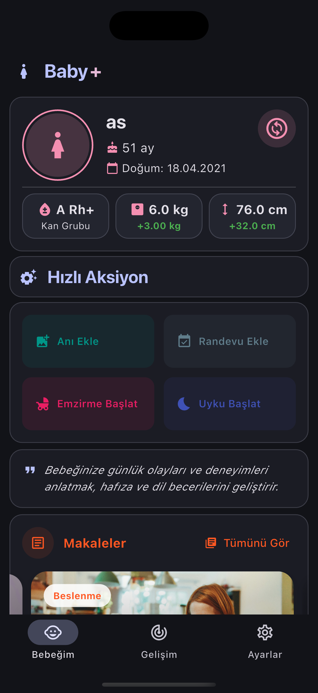
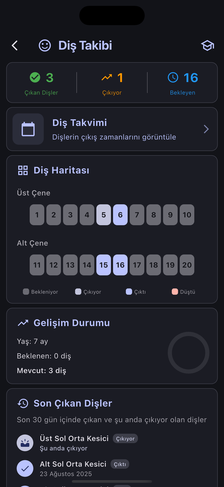
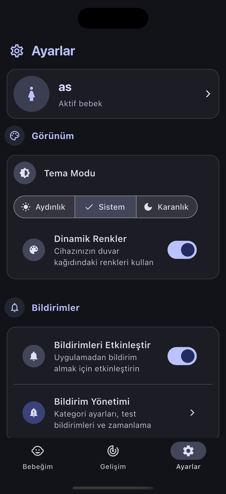
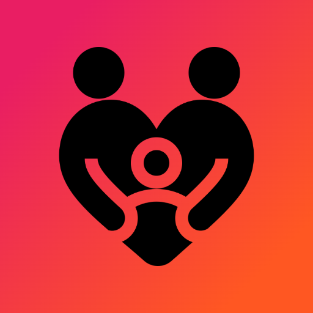

Her ilki kaydet,
hiçbir anı kaçırma.
Bebeğinin gelişimini takip et, özel anları kaydet ve ebeveynlik yolculuğunda sana rehberlik edecek ipuçları al.
BabyPlus, ebeveynlerin bebeklerinin gelişimini kapsamlı şekilde takip edebilmeleri için tasarlandı. Büyüme, beslenme ve sağlık takibi ile yolculuğuna eşlik eder.
Bebeğinin ihtiyacı olan her şey
Büyümeden uykuya, aşılardan doktor randevularına kadar ebeveynliği kolaylaştıran araçlar.
Gelişim Takibi
Boy, kilo ve baş çevresi ile bebeğinin persentil büyümesini grafiklerle izle.
Beslenme & Uyku
Emzirme, mama ve uyku kayıtlarını tut, günlük ritmi kolayca gör.
Aşı Takvimi
Aşı zamanlarını bildirimlerle aksatmadan, güvenle takip et.
Fotoğraf Albümü
İlk gülüşten ilk adıma, en değerli anları albümünde sakla.
Doktor Randevuları
Sağlık kontrollerini planla ve doktor notlarını tek yerde topla.
Veri Güvenliği
Tüm kayıtlarını cihazında güvenle sakla, hiçbir anıyı kaybetme.
Doğru zamanda doğru aşı
Sağlık Bakanlığı standartlarıyla uyumlu adım adım aşı takvimi.
Adım adım aşı yolculuğu
BabyPlus aşı takvimini bebeğinin doğum tarihine göre oluşturur; yaklaşan aşılar için zamanında hatırlatır, tamamlananları işaretler. Böylece tek bir aşıyı bile kaçırmazsın.
Hepatit B (1. doz)
Tamamlandı
5'li Karma + KPA
Tamamlandı
5'li Karma (2. doz)
Yaklaşıyor
OPA + Hepatit B
Planlandı
Uygulamadan görünümler
Sıcak pastel renkler ve ebeveynler için sadeleştirilmiş arayüz.




Bebeğinin hikayesi BabyPlus'ta başlasın
Hemen indir, ilk kaydını oluştur ve o küçük anları sakla.